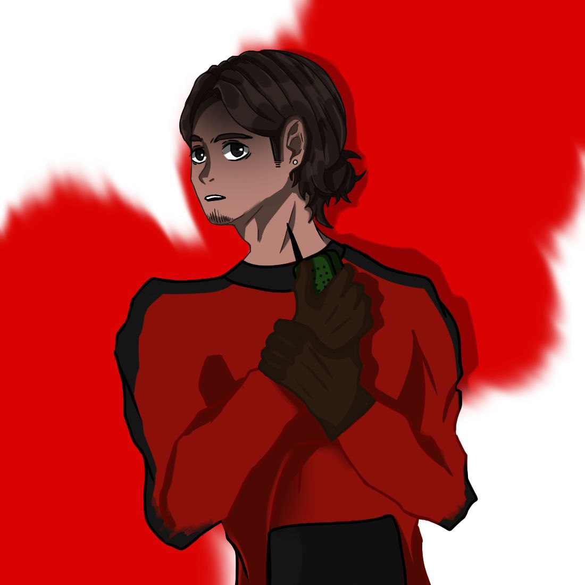
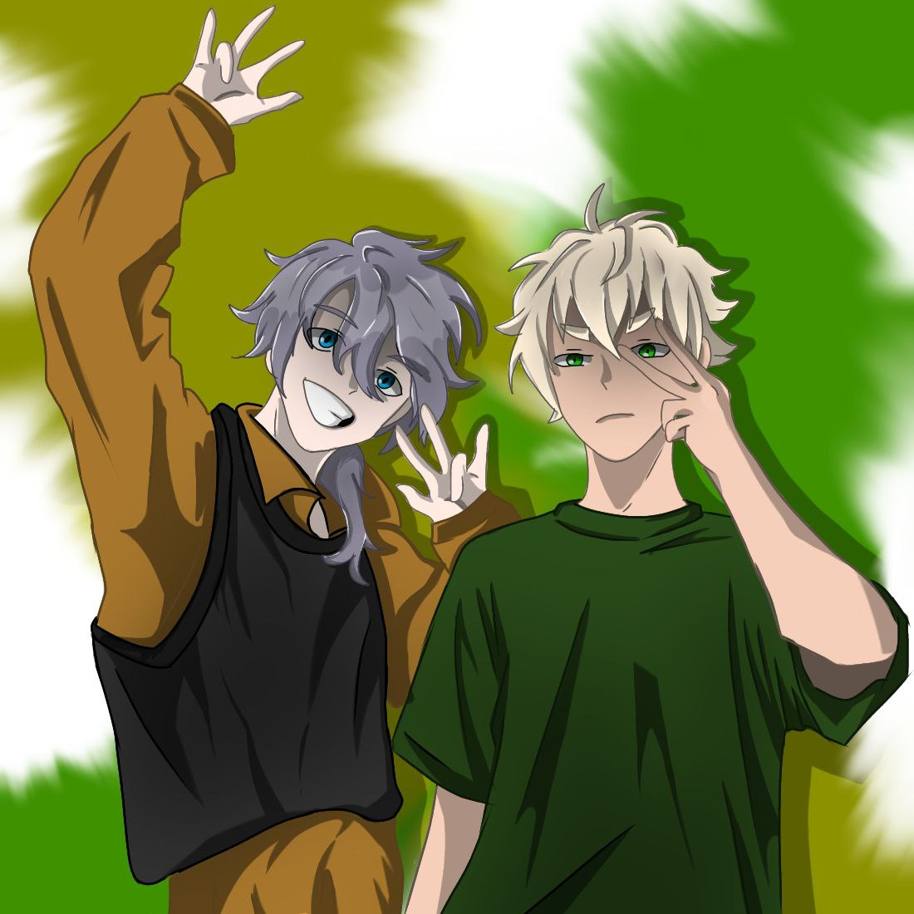
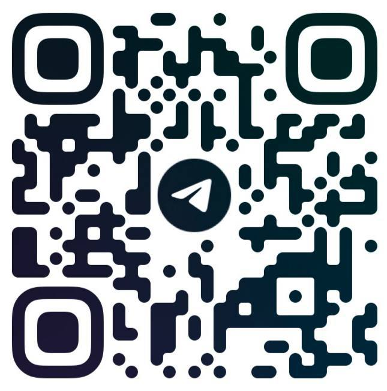

Experiment Solar
Главный герой с его командой пошли на сложно выполнимую
миссию в ходе которой его команда погибает, ему предстоит
доделать начатое и поймать вырвавшегося мутанта. В ходе
исследования бункера и побегов от монстра, герою предстоит
искать различную информацию о мутанте в том числе история
его происхождения и его слабости. Исходя из информации о
монстре, герою нужно поймать и уничтожить мутанта. Так же
герою необходимо искать баллоны с кислородом для
преодоления заполненных водой помещений бункера.
Главный герой - Виталий, подписал контракт с крупной фирмой, условиями которого было: проникновение в затопленный бункер военных времен, исследование его на предмет ценной информации, также Виталий является главным в команде. Команда состоит из 4 человек, включая главного героя.
Александр - помощник главного героя, он - на верху и помогает Виталию ориентироваться в бункере по рации.
 Олег и Михаил должны открыть бронированную дверь бункера для главного героя, но они погибли из-за несчастного случая после открытия двери.
Мутант "Bones" - был создан случайно во время проведения экспериментов над военнопленными.
Кирилл Загребин - Дизайнер, Матвей Вахрушев - Game-дизайнер,
Александр Грязев - разболтяй , Владимир Зимин - Frontend Разработчик.
Реклама - Дана Меркушева, Реклама - Валерия Коканова.
Галина Шальнова - Художница, Арина Котова- Художница
Связь с нашей командой
